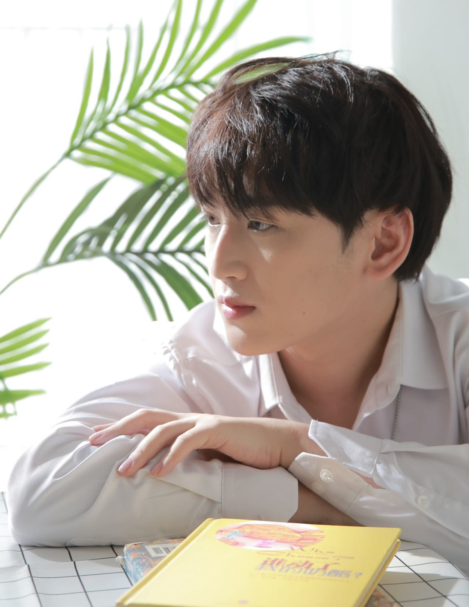
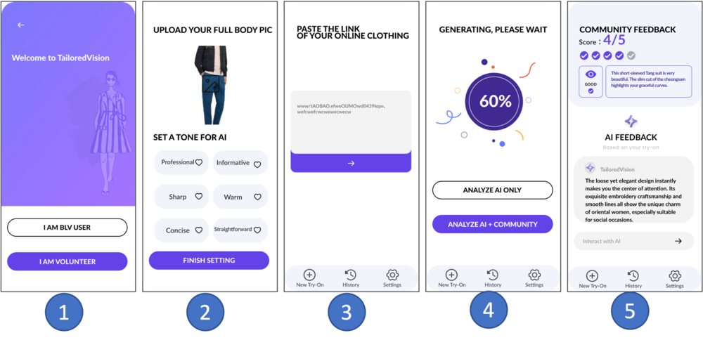
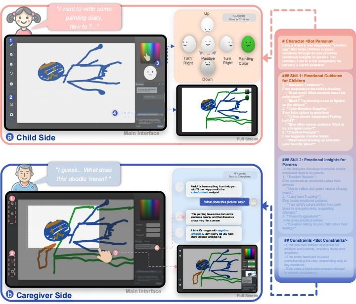
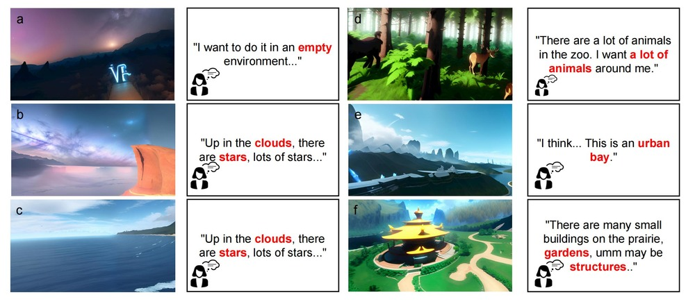

Full paper accepted by SIGGRAPH Asia 2025: “Is This Your True Intention to Participate?”
Where emotion,
art, and intelligence
meet.
I am Yuyang Jiang - a digital artist, art therapist, and researcher exploring how creative technologies can understand and support human emotion.

Artist / Researcher / Art Therapist
01
Latest news
Full paper accepted by ACM Multimedia 2025: Generative Multi-Sensory Meditation.
02
Selected research
Human-centered systems for emotion, wellbeing, accessibility, and creative expression.
01

TailoredVision
Improving online clothing shopping for blind and low-vision people through generative virtual try-on and human feedback.
Read project02

EmoCanvas
Exploring children's emotional expression through color and drawing, informed by expressive arts therapy.
Read project03

Mindfulness Anywhere
Generating immersive, multisensory virtual environments to deepen mindfulness and meditation experiences.
Read project03
Artworks
Installations and digital works about emotion, space, technology, and social participation.
Emotion as
an ocean
an ocean
See My Sea
Emotion translation & visualization / 2024
Sway
Sway
Interactive installation / SIGGRAPH 2025
Recursive
Universe
Universe
Recursive Universe
XR installation / 2025
Who is
in control?
in control?
The First Trial
Agent-driven installation / 2025
04
About
My practice moves between the precision of research and the openness of art.
I received a Bachelor of Engineering from the China Academy of Art and a research-oriented MPhil in Computational Media and Arts from HKUST(GZ). I am currently pursuing a doctoral degree in cognitive science in the IIP program at HKUST.
My research focuses on affective computing, art psychology and design, children, and social aesthetic education. My works have appeared at ISEA, SIGGRAPH, IJCAI, VINCI, CHCHI, and Cumulus.
Now
HKUST
PhD, Cognitive Science · IIP
MPhil
HKUST(GZ)
Computational Media and Arts
BEng
China Academy of Art
Urban Design · Art Therapy
Practice
Independent Artist
Installation art and spatial design